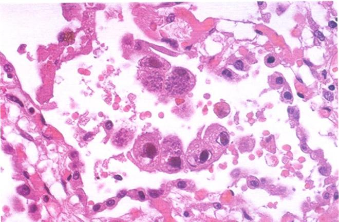
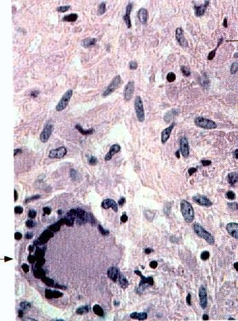

Once a leukocyte has arrived, it has three possible jobs: eat and destroy the offending agent
(phagocytosis and degradation), present it to trigger adaptive immunity, or, as an unwanted side
effect of doing either, injure the host's own tissue.پس از رسیدن لکوسیت، سه کار ممکن پیش رو دارد: خوردن و نابودکردن عامل مهاجم (فاگوسیتوز و تخریب)، ارائهٔ آن برای راهاندازی ایمنی اکتسابی، یا، بهعنوان اثر جانبی ناخواستهٔ هرکدام از این دو، آسیبرساندن به بافت خودِ میزبان.
Definitionتعریف
Phagocytosis is the process by which a leukocyte engulfs a pathogenic
microorganism, a foreign body, or tissue debris at the inflammatory focus.فاگوسیتوز فرایندی است که طی آن لکوسیت یک میکروارگانیسم بیماریزا، یک جسم خارجی، یا خردههای بافتی را در کانون التهابی میبلعد.
Table · The three phagocytesجدول · سه فاگوسیت
Phagocyte
Also called
What it clears
Neutrophilنوتروفیل
Microphageمیکروفاژ
Many kinds of pathogenic microorganism and tissue debris; the early responderانواع میکروارگانیسمهای بیماریزا و خردههای بافتی؛ پاسخدهندهٔ اولیه
Macrophageماکروفاژ
Large phagocyteفاگوسیت بزرگ
Larger debris, more organisms per cell, sustained clearance and antigen presentationخردههای بزرگتر، ارگانیسم بیشتر در هر سلول، پاکسازی پایدار و ارائهٔ آنتیژن
Eosinophilائوزینوفیل
—
Parasites (via granule proteins), and a role in allergic reactionsانگلها (از طریق پروتئینهای گرانولی)، و نقشی در واکنشهای آلرژیک
Phagocytosis and degradation, in orderفاگوسیتوز و تخریب، بهترتیب
Recognition and attachment. The phagocyte's receptors recognize the particle directly, or
recognize it after it has been coated by an opsonin, a serum protein, chiefly IgG or C3b, that
makes the target far easier to bind.opsonization converts a slippery target into
one the phagocyte's receptors grip efficiently, which is why opsonin (or complement) deficiency causes
recurrent infection even with a normal phagocyte count.اپسونیزاسیون یک هدف لغزنده را به هدفی تبدیل میکند که گیرندههای فاگوسیت آن را بهخوبی میگیرند؛ به همین دلیل کمبود اپسونین (یا کمپلمان) حتی با شمارش طبیعی فاگوسیتها باعث عفونت راجعه میشود.شناسایی و اتصال. گیرندههای فاگوسیت ذره را مستقیم میشناسند، یا پس از پوشیدهشدن آن با یک اپسونین، پروتئین سرمی که عمدتاً IgG یا C3b است و هدف را برای اتصال بسیار آسانتر میکند.
Engulfment. The phagocyte's membrane extends pseudopods around the particle, and they
fuse to close it inside a membrane-bound vacuole, the phagosome.بلع. غشای فاگوسیت کاذبپاهایی را دور ذره میگستراند، و اینها جوش میخورند تا ذره را درون یک واکوئل غشادار بهنام فاگوزوم ببندند.
The phagosome fuses with a lysosome to form a phagolysosome, with degranulation of
lysosomal contents into it.فاگوزوم با یک لیزوزوم جوش میخورد تا فاگولیزوزوم تشکیل شود، همراه با تخلیهٔ محتویات لیزوزومی به درون آن.
Killing or degradation, by an oxygen-dependent and an oxygen-independent mechanism
running side by side.کشتن یا تخریب، توسط یک سازوکار وابسته به اکسیژن و یک سازوکار مستقل از اکسیژن که همزمان در حال اجرا هستند.
Table · Killing mechanismsجدول · سازوکارهای کشتن
Mechanism
How it works
Oxygen-dependentوابسته به اکسیژن
Phagocytosis triggers an oxidative (respiratory) burst: a sudden rise in oxygen
consumption and glycogen catabolism generates reactive oxygen species (ROS). NADPH oxidase converts
O2 to superoxide (O2−), which is then converted to hydrogen
peroxide (H2O2); myeloperoxidase (MPO) then uses H2O2 plus
a halide to generate hypochlorous acid (HOCl), a powerful microbicidal oxidant.فاگوسیتوز انفجار اکسیداتیو (تنفسی) را راه میاندازد: افزایش ناگهانی مصرف اکسیژن و کاتابولیسم گلیکوژن، گونههای فعال اکسیژن (ROS) تولید میکند. NADPH اکسیداز، O2 را به سوپراکسید (O2−) تبدیل میکند، که سپس به پراکسید هیدروژن (H2O2) تبدیل میشود؛ سپس میلوپراکسیداز (MPO) از H2O2 بههمراه یک هالید برای تولید اسید هیپوکلرو (HOCl)، یک اکسیدان میکروبکش قدرتمند، استفاده میکند.
Oxygen-independentمستقل از اکسیژن
Granule enzymes that do not need oxygen: lysozyme, lactoferrin, defensins, and other
bactericidal proteins.آنزیمهای گرانولی که به اکسیژن نیاز ندارند: لیزوزیم، لاکتوفرین، دفنسینها، و دیگر پروتئینهای باکتریکش.
A little dictionaryNADPH: coenzyme II. O2−:
superoxide anion. H2O2: hydrogen peroxide. MPO: myeloperoxidase. HOCl:
hypochlorous acid. ROS: reactive oxygen species.NADPH: کوآنزیم II. سوپراکسید. پراکسید هیدروژن. میلوپراکسیداز. اسید هیپوکلرو. گونههای فعال اکسیژن.
Clinical correlationارتباط بالینی
Chronic granulomatous disease is a defect of NADPH oxidase: phagocytes engulf bacteria normally
but cannot generate the oxidative burst, so patients suffer recurrent infection with catalase-positive
organisms (Staphylococcus aureus, Aspergillus) that would otherwise destroy their own
H2O2 and be killed by it.بیماری گرانولوماتوز مزمن نقصی در NADPH اکسیداز است: فاگوسیتها باکتریها را بهطور طبیعی میبلعند اما نمیتوانند انفجار اکسیداتیو تولید کنند، پس بیماران دچار عفونت راجعه با ارگانیسمهای کاتالاز-مثبت (استافیلوکوکوس اورئوس، آسپرژیلوس) میشوند که در غیر این صورت H2O2 خودشان را از بین میبردند و توسط آن کشته میشدند.
High yield · the other two jobsپرتکرار · دو کار دیگر
Immunity: macrophages and dendritic cells process and present antigen to lymphocytes,
linking innate inflammation to the adaptive immune response. Tissue injury: the same enzymes
and ROS that kill microbes are released into the extracellular space and damage normal host tissue,
which is the mechanistic basis of collateral damage in prolonged or misdirected inflammation.ایمنی: ماکروفاژها و سلولهای دندریتیک آنتیژن را پردازش و به لنفوسیتها ارائه میدهند، و التهاب ذاتی را به پاسخ ایمنی اکتسابی پیوند میزنند. آسیب بافتی: همان آنزیمها و ROS که میکروبها را میکشند به فضای خارجسلولی نیز رها میشوند و به بافت طبیعی میزبان آسیب میرسانند؛ این پایهٔ سازوکاری آسیب جانبی در التهاب طولانی یا نابهجاست.
· Cell-type significance and the macrophage's morphologic disguisesاهمیت نوع سلول و ظاهرهای گوناگون ماکروفاژ
Which leukocyte dominates a lesion is itself diagnostic information, not just descriptive
detail.غالببودن کدام لکوسیت در یک ضایعه خود اطلاعاتی تشخیصی است، نه فقط جزئیاتی توصیفی.
Table · Pathological and clinical significance of each inflammatory cellجدول · اهمیت آسیبشناختی و بالینی هر سلول التهابی
Cell
Read as
Neutrophilنوتروفیل
Early stage of acute inflammation; purulent (suppurative) inflammationمرحلهٔ اولیهٔ التهاب حاد؛ التهاب چرکی
Monocyteمونوسیت
Later stage of acute inflammation; some specific infectious diseasesمرحلهٔ بعدی التهاب حاد؛ برخی بیماریهای عفونی خاص
Eosinophilائوزینوفیل
Mainly allergy and parasite infectionعمدتاً آلرژی و عفونت انگلی
Lymphocyteلنفوسیت
Viral infection and chronic inflammation; also characteristic of syphilisعفونت ویروسی و التهاب مزمن؛ همچنین مشخصهٔ سیفلیس
The macrophage in particular changes shape with its job. Four morphologic forms recur across
pathology and are worth recognizing on sight.ماکروفاژ بهطور ویژه با تغییر کارکرد، شکل خود را نیز تغییر میدهد. چهار شکل آسیبشناختی تکرارشونده وجود دارد که شناختن آنها در نگاه نخست ارزشمند است.

MICROFig. 5 H&E, inflammatory
focus with epithelioid macrophages and an early multinucleated giant cell forming by fusion.میکرورنگآمیزی H&E، کانون التهابی با ماکروفاژهای اپیتلیوئید و یک سلول غولآسای چندهستهای در حال شکلگیری از طریق ادغام.

MICROFig. 6 Langhans' giant cell
(nuclei arranged in a horseshoe at the cell's rim) beside sheets of epithelioid cells, H&E.میکروسلول غولآسای لانگهانس (هستهها بهشکل نعلاسبی در حاشیهٔ سلول چیده شدهاند) در کنار صفحاتی از سلولهای اپیتلیوئید، H&E.
Table · The macrophage's four disguisesجدول · چهار ظاهر ماکروفاژ
Form
Looks like
Seen in
Epithelioid cellسلول اپیتلیوئید
Elongated, pink, epithelium-like cytoplasm; poor at phagocytosis, good at secretionسیتوپلاسم کشیده، صورتی، شبیه اپیتلیوم؛ در فاگوسیتوز ضعیف، در ترشح قوی
Granulomasگرانولومها
Langhans' giant cellسلول غولآسای لانگهانس
Many nuclei arranged in a horseshoe or ring at the cell peripheryهستههای فراوان بهشکل نعلاسبی یا حلقه در حاشیهٔ سلول
Nuclei scattered randomly throughout the cytoplasmهستهها بهطور تصادفی در سراسر سیتوپلاسم پراکندهاند
Around inert foreign material (suture, splinter)اطراف مواد خارجی بیاثر (بخیه، خار)
Foamy cellسلول کفآلود
Abundant, vacuolated, lipid-laden cytoplasmسیتوپلاسم فراوان، واکوئله، پر از چربی
Atherosclerosis, xanthomas, sites of lipid breakdownآترواسکلروز، گزانتوما، محلهای تجزیهٔ چربی
Exam trapتلهٔ امتحانی
Nucleus arrangement is the whole distinction between the two giant cells: horseshoe at the
rim = Langhans; scattered randomly = foreign-body. Both are fused epithelioid macrophages;
neither is a distinct cell lineage.چیدمان هسته کل تمایز میان این دو سلول غولآسا است: نعلاسبی در حاشیه = لانگهانس؛ پراکندهٔ تصادفی = جسم خارجی. هر دو ماکروفاژهای اپیتلیوئید ادغامشدهاند؛ هیچکدام ردهای سلولی مجزا نیستند.
Beyond the slidesRobbins notes granuloma formation itself
(the organized collection of epithelioid macrophages) is a Part 2 topic; this section only covers the
macrophage's own shape-shifting, which the lecture introduces here as part of leukocyte biology.روبینز اشاره میکند که خودِ شکلگیری گرانولوم (مجموعهٔ سازمانیافتهٔ ماکروفاژهای اپیتلیوئید) موضوع بخش دوم است؛ این بخش تنها به تغییر شکل خودِ ماکروفاژ میپردازد که درسگفتار آن را اینجا در چارچوب زیستشناسی لکوسیت معرفی میکند.